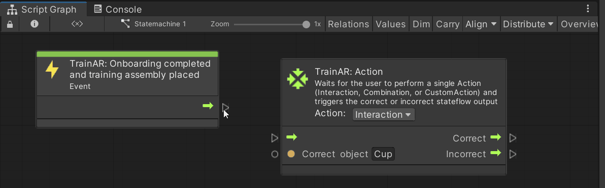

Using Visual Scripting to create trainings
By creating stateflows you describe the procedural sequences of the trainings you can create with TrainAR. In essence, this stateflow describes at which points, which actions are expected of the user and how the training reacts to those actions.
Starting node
The TrainAR: Onboarding completed and training assembly placed node acts as a starting point for the stateflow. The stateflow continues from this point, as soon as the training setup is placed.
Connecting nodes
TrainAR nodes have various inputs and outputs. By connecting the nodes with eachother you control the procedural flow of your training. Connecting nodes is done by connecting an output of one node with the input of another.

Referencing TrainAR Objects in TrainAR nodes
With some nodes in TrainAR you want to reference specific TrainAR Objects, most notably, TrainAR: Action and TrainAR: Object Helper nodes.
Referencing objects in nodes is done by using the name of the TrainAR Object. Let's look at an example.
In this setup there is a cup as TrainAR Object in the Hierarchy of the scene. If you want to reference this cup in a node you simply have to use the name of the object as it is in the hierarchy as a reference. This is done in the TrainAR: Action node in the Correct object field.
Conditional Outputs
Some nodes have multiple outputs, which get triggered depending on what happened in your training. For example you probably want to react differently to a correct input of a user than to an incorrect input. Consequently, these nodes have multiple outputs.
Consider this example:

The correct user action at this state is an interact on the Cup TrainAR Object. If this occures, the stateflow continues according to the correct path, otherwise according to the Incorrect path, which in this case displays a error feedback on the UI. Since the Incorrect path ends after the feedback node, the stateflow returns to the previous TrainAR Action node and waits for the next input of the user.